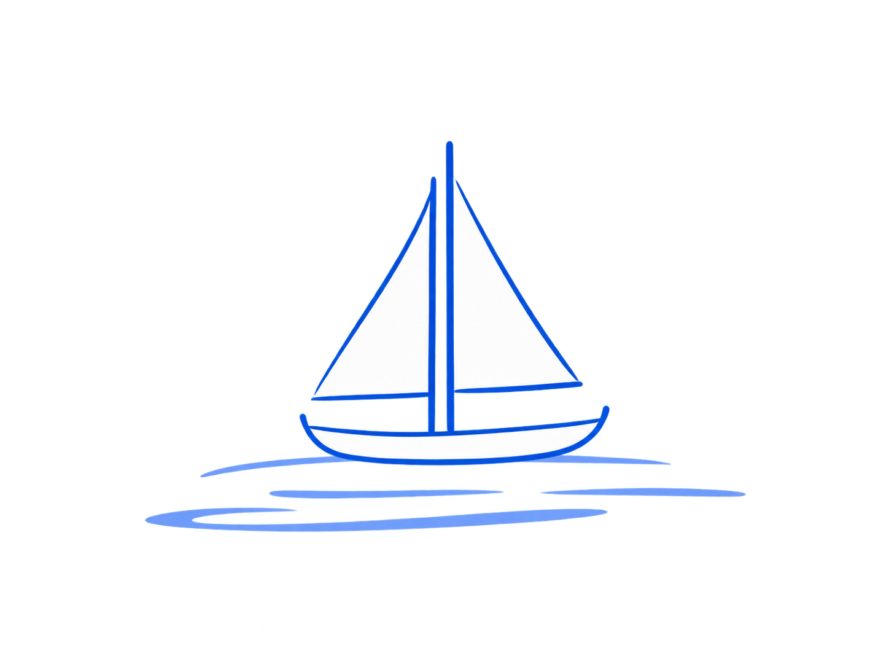
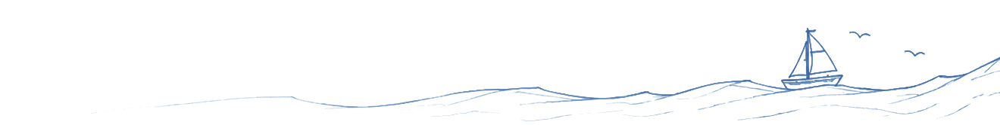

St. John’s, Newfoundland & Labrador
Zac Batten
building useful software
I’m a software developer from St. John’s. I build clear, reliable tools that solve real problems.
47.5615° N, 52.7126° W
Featured projects
Useful software
for real work.
Municipal operations
Muni Assets
Offline-capable asset management for inspections, mapping, and public works workflows.
Explore the platform Real estate intelligenceDwellSmart
Natural-language home search powered by live MLS listings, local neighbourhood context, and AI property analysis.
Visit DwellSmart Adaptive game AISwarmForge
A self-play laboratory where three StarCraft II bots learn complete strategies, fingerprint opponents, and diagnose losses.
Explore the bot familyTech stack
- TypeScript
- Python
- React / React Native
- PostgreSQL + PostGIS
- Cloudflare
- Supabase
- Playwright
- AI / LLM APIs
-
whatever gets the job done

Let’s connect
Have something useful in mind?
Tell me what you’re building. I’m always interested in useful problems and interesting ideas.
